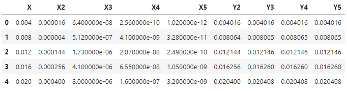
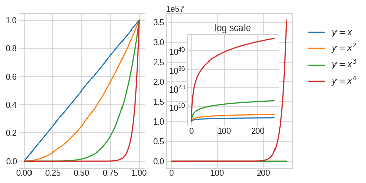
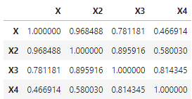
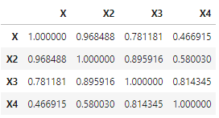
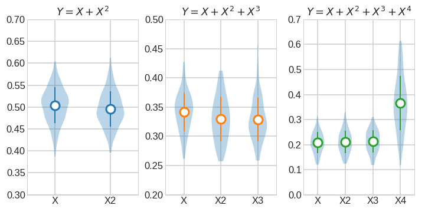
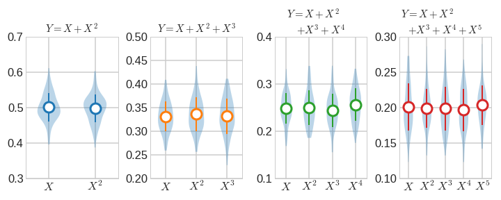

- Pearson Correlation Coefficient는 두 데이터가 얼마나 연관성을 가지고 있는지 보여줍니다.
수치로는 -1에서 1 사이의 값으로 표현되고, 수식으로는 다음과 같이 표현됩니다.
이를 $X$와 $Y$의 평균($ \mu $)과 기댓값($ \mathbb{E}$)으로 표현하면 다음과 같습니다.
- 기하학적 직관을 바탕으로 $Y$의 $X$로의 projection이라는 통찰을 보이신 분도 있습니다만
- 간단하게 “$ Y=X $와 같은 직선에서 벗어나면 멀어진다” 정도는 알고 있기에,
$X$와 $X^n$의 상관계수가 궁금해졌습니다.
1. Pearson Correlation Coefficient
- $ X^n $은 X의 범위에 따라 X에서 벗어나는 정도가 다릅니다.
- X가 0~1일 때, 그리고 1~250일 때 두 가지 경우를 나누어 테스트해 보았습니다.
- X가 0~1일 때 데이터: test1.csv
1
2df1 = pd.read_csv('test1.csv')
df1.head()
- X가 1~250일 때 데이터: test250.csv
1
2df250 = pd.read_csv('test250.csv')
df250.head()
- X가 0~1일 때 데이터: test1.csv
- X1~X5는 각기 $ X^n$ $(n=1,2,3,4,5)$이고,
- Y2~Y5는 각기 $\displaystyle \sum_{k=1}^n X^k$ $(n=2,3,4,5)$ 입니다.
- 두 데이터 셋에 $ X $와 더불어 $ X^n$ $(n=1,2,3,4)$를 담았습니다.
- 그래프를 그려보면 다음과 같습니다.

- 그래프를 그려보면 다음과 같습니다.
- pandas의
DataFrame.corr()함수를 이용하여 PCC를 간단하게 구할 수 있습니다.1
df1[['X', 'X2', 'X3', 'X4', 'X5']].corr(method='pearson')
- 실행결과 : $X$와 가장 먼 $X^5$도 0.82나(!) 됩니다.

- 실행결과 : $X$와 가장 먼 $X^5$도 0.82나(!) 됩니다.
- 이번에는 훨씬 차이가 나는 1~250까지를 봅시다.
1
2df250 = pd.read_csv('test250.csv')
df250[['X', 'X2', 'X3', 'X4', 'X5']].corr(method='pearson')- 실행결과 : 0~1까지와 차이가 거의 없습니다.
소숫점 5째 자리는 가야 차이가 드러납니다.
- 실행결과 : 0~1까지와 차이가 거의 없습니다.
- 일단 호기심이 해결되었습니다.
2. Feature Importance
- 그렇다면, $ Y = X + X^2 + \ldots + X^n $의 회귀식을 만들었을 때, 각각의 기여도는 얼마일까요.
- 회귀식은 무조건 1 : 1 : … : 1이 나올 것입니다.
- Random Forest의 Feature Importance를 통해서 판단해보겠습니다.
- Random Forest는 데이터 분할에 따라 결과가 달라집니다.
다음과 같은 코드를 작성하여 100회 반복한 결과를 수집했습니다.
1
2
3
4
5
6
7
8
9
10
11
12
13
14
15
16
17
18
19
20
21
22
23
24
25
26from sklearn.model_selection import train_test_split
from sklearn.metrics import r2_score
def calc_featimps(df):
featimps = {}
for i in range(2,6):
y = df1[f'Y{i}']
x = df1.iloc[:,:i]
print(f'X features={x.columns.tolist()}, Y={y.name}')
featimp = pd.DataFrame()
for j in range(100):
X_train, X_test, y_train, y_test = train_test_split(x, y)
rf = RandomForestRegressor()
rf.fit(X_train, y_train)
y_pred = rf.predict(X_test)
r2 = r2_score(y_test, y_pred)
featimp_ = pd.Series(rf.feature_importances_, index=X_train.columns, name=f'{j}')
featimp = pd.concat([featimp, featimp_], axis=1)
featimps[f'{i}'] = featimp
return featimpsmatplotlib의 violon plot을 이용해서 분포를 확인해 보겠습니다.
- Feature별 Feature Importance의 평균값과 표준편차를 함께 표시하겠습니다.
1
2
3
4
5
6
7
8
9
10
11
12
13
14
15
16
17
18
19
20
21
22
23
24
25
26
27
28
29
30
31
32
33
34
35
36
37
38
39
40
41
42
43plt.rcParams['mathtext.fontset'] = 'cm'
plt.rcParams['mathtext.default'] = 'it'
font_title = {'fontsize': 15,
'fontweight' : plt.rcParams['axes.titleweight'],
'verticalalignment': 'center',
'horizontalalignment': 'center'}
pad_title = 12
font_label = {'verticalalignment': 'bottom',
'horizontalalignment': 'center'}
pad_label = 20
def plot_featimps():
fig, axes = plt.subplots(ncols=4, nrows=1, figsize=(10,4))
xlabels = [r'$ X $', r'$ X^2 $', r'$ X^3 $', r'$ X^4 $', r'$ X^5 $']
for i, ax in enumerate(axes):
labels = featimps[f'{i+2}'].index.tolist()
print(labels)
positions=np.arange(i+2).tolist()
ax.violinplot([featimps[f'{i+2}'].loc[idx] for idx in labels],
showextrema=False, positions=positions)
ax.errorbar(labels, featimps[f'{i+2}'].mean(axis=1), yerr=featimps[f'{i+2}'].std(axis=1),
fmt='o', mec=f'C{i}', mew=3, mfc='w', ms=15,
lw=2, c=f'C{i}')
ax.set_xlim((-0.5, i+1.5))
ax.set_xticks(np.arange(i+2))
ax.set_xticklabels(xlabels[:i+2], fontdict=font_label)
ax.tick_params(axis='x', which='major', pad=pad_label)
axes[0].set_ylim((0.3, 0.7))
axes[1].set_ylim((0.2, 0.5))
axes[2].set_ylim((0.1, 0.4))
axes[3].set_ylim((0.1, 0.3))
axes[0].set_title(r'$Y=X+X^2$', fontdict=font_title, pad=pad_title)
axes[1].set_title(r'$Y=X+X^2+X^3$', fontdict=font_title, pad=pad_title)
axes[2].set_title(r'$Y=X+X^2 $ '+'\n' + r'$ +X^3+X^4$', fontdict=font_title, pad=pad_title)
axes[3].set_title(r'$Y=X+X^2 $ '+'\n' + r'$ +X^3+X^4+X^5$', fontdict=font_title, pad=pad_title)
plt.tight_layout()
2.1. X = 0 ~ 1
- 먼저 X가 0과 1 사이일 때를 살펴보겠습니다.
1
2featimps1 = calc_featimps(df1)
plot_featimps()- 실행결과: 모든 경우에서 Feature Importance가 균등하게 분배됩니다.
Random Forest 수행에 따른 편차가 violin plot으로 드러나 있기는 하지만요.
- 실행결과: 모든 경우에서 Feature Importance가 균등하게 분배됩니다.
2.2. X = 1 ~ 250
- 이제 X가 1과 250 사이일 때를 살펴보겠습니다.
1
2featimps1 = calc_featimps(df250)
plot_featimps()- 실행결과: 앞서와 같은 결과입니다.

- 실행결과: 앞서와 같은 결과입니다.
2.3. 정리
- Random Forest를 수행한 경우에도, 정상적으로 평균 Feature Importance는 $\frac{1}{n}$입니다.
- 수정되기 전의 글에서는 특정 차수가 높게 나왔는데, 데이터 오류 때문으로 확인되었습니다.